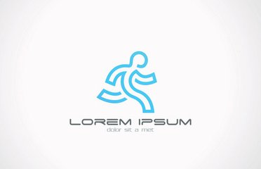

活动方式
穿鞋跑步易于减轻损伤，但容易导致平足
穿上运动鞋能够降低地面对足部的冲击，起到缓冲和保护的作用。不仅跑步鞋有这种功能，篮球鞋、足球鞋、网球鞋等都有缓冲作用，而且不同运动鞋根据运动的特定还会加强某一方面的保护作用。比如防滑、弧形设计等。
由于运动鞋穿着方便，因此很多人长年累月穿运动鞋。但长期如此，鞋中的宽松环境会导致青少年脚底韧带拉松变长，形成平足。而且运动鞋的透风性不好，极易引发足部皮肤性疾病如足癣、皮炎、湿疹等。
光脚跑步能有效运动小腿肌肉、保护脚踝
光脚跑步，对环境的要求比较苛刻。人的脚底板跟动物不一样，能光脚 外出的范围是有限的，所以，光脚跑步最好是在室内，这样就降低了脚部受伤的几率，只要把室内打扫一下，是可以避免不穿鞋子带来的外部伤害的。
然后说说内部伤害。穿着鞋跑步跟不穿鞋跑步，足部用力的地方是不一样的。一般情况下，穿鞋的人习惯脚后跟先着地，但不穿鞋的人下意识的保护脚跟足骨，会习惯性的从头到尾，以前脚掌着地的方式跑步。研究发现，这种跑步方式可以减少疼痛和受伤的可能性，加强小腿部肌肉锻炼，更接近于人类最原始的跑步方式。
禁忌
专家指出，有些情况下，运动前一定要做好准备，碰上大雾、阴霾天气，应该取消预定的运动计划。运动时应注意以下几点：
一忌不做准备运动。在体育锻炼前做些简单的四肢运动，对安全有效的锻炼身体有好处。因为在寒冷的冬天，人体因受寒冷的刺激而使肌肉、韧带的弹性和延展性明显降低，全身关节的灵活性也较夏秋季节差得多。锻炼前不做准备运动，则易引起肌肉、韧带拉伤或关节扭伤，致使锻炼不能正常进行。
三忌不注意保暖。运动时不可忽视保暖，否则会引起伤风感冒。天气冷的时候，可待身体发热后再逐渐减衣，开始锻炼时不必立即脱掉衣服，也不要等大汗淋漓时再脱衣服，否则容易感冒。